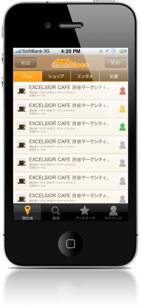

混んでる？空いてる？をみんなで共有
モモロコは、お店などスポットの混雑状況をみんなで共有するサービスです。
今いるスポットの混雑状況をみんなに教えてあげましょう。
そして、次の目的地の混雑状況を教えてもらいましょう。

モモロコを使ってみる
アプリをダウンロードする
- 現在、α版を上記のリンクから直接ダウンロードしていただけます。
- モモロコは位置情報を利用したサービスです。ご利用の際は、端末の位置情報の設定をオンにしてください。
- モモロコが、あなたの位置情報を第三者に公開することはありません。